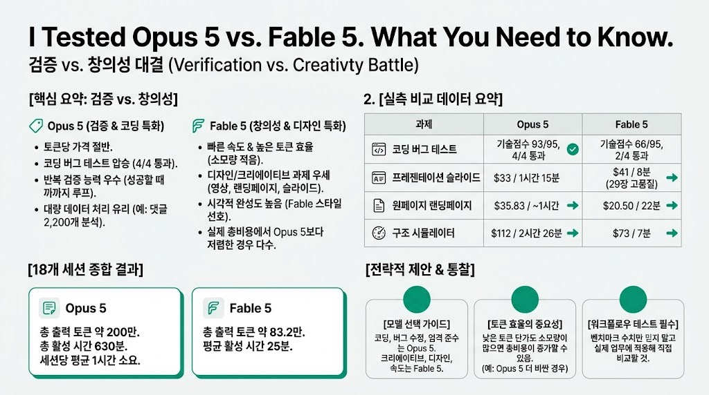

Nate Herk | AI AutomationMORNING DIGEST · 2026-07-26 · Nate Herk | AI Automation🎬 영상
I Tested Opus 5 vs. Fable 5. What You Need to Know.

01핵심 개요
항목
내용
채널
Nate Herk \
AI Automation
제목
I Tested Opus 5 vs. Fable 5. What You Need to Know.
길이
약 30분 24초(1824초)
핵심결론 1
총 18개 세션(Opus 5 10개, Fable 5 8개) 실측 결과, Opus 5의 토큰당 가격은 Fable 5의 절반이지만 실제 총비용은 더 많이 나온 경우가 다수였다(토큰 소모량이 더 많기 때문)
핵심결론 2
코드 버그 탐색·수정 과제에서 Opus 5가 4/4 테스트 통과(기술점수 93/95)로 Fable 5의 2/4 통과(66/95)를 크게 앞섰다 — Opus 5가 검증·반복 능력에서 우위
핵심결론 3
디자인·크리에이티브 과제(랜딩페이지, LinkedIn 카루셀, 프레젠테이션 슬라이드)에서는 대체로 Fable 5가 더 낫거나 비슷한 품질을 더 빠르고 저렴하게 만들었다
02핵심 내용 구조
1) 테스트 설계
진행자는 Claude Code 하네스 안에서 동일 프롬프트·동일 코드베이스를 Opus 5와 Fable 5에 각각 실행시켜 비용·시간·토큰·품질을 비교했다.
총 7가지 실전 과제(버그 수정 2회, 발표용 영상 제작, 랜딩페이지, LinkedIn 포스트+카루셀, 유튜브 콘텐츠 전략 리서치, 프레젠테이션 슬라이드, 컴퓨터 사용(Snake 게임), 구조 시뮬레이터)를 순차 진행했다.
Excalidraw 다이어그램 생성 같은 하네스 없는 단순 비교도 곁들였다.
2) 버그 수정 테스트 1회차 — 무승부에 가까움
동일 코드베이스에서 버그를 찾아 수정하게 한 뒤 Codex로 결과를 심사했다.
Fable 5: 11분, $5.30. Opus 5: 13분, $4.22로 Opus가 더 저렴했다.
Codex 판정은 근소하게 Fable 5 승리(패치가 더 깔끔하고 즉시 리뷰 가능했다는 이유).
3) 버그 수정 테스트 2회차 — Opus 5 압승
동일한 방식의 2번째 코드베이스 버그 테스트에서 Opus 5는 20분, $6.50, Fable 5는 12분, $8.73 소요됐다.
Codex 심사 결과 Opus 5는 4/4 테스트 통과(기술점수 93/95), Fable 5는 2/4 통과(66/95)에 그쳤다.
이 결과는 Anthropic이 릴리스 블로그에서 강조한 "Opus 5는 작업을 검증하고 성공할 때까지 신중하게 반복하는 능력이 크게 향상됐다"는 설명과 일치한다.
4) 발표용 10초 영상 제작 — Opus가 2개, Fable이 1개 생성
"AIS Live" 행사 홍보용 10초 영상 제작을 지시하자 Opus 5는 세로·가로 버전 2개를, Fable 5는 1개를 만들었다.
Opus 5: 40분, $11.19. Fable 5: 7분 49초, 약 $7로 Fable이 절반 비용·훨씬 빠른 속도.
Fable 5 결과물에는 일부 오래된(부정확한) 정보가 포함됐는데, 이는 진행자가 컨텍스트를 최신화하지 않은 탓으로 분석됐다.
5) 원페이지 랜딩페이지 제작 — Fable이 더 저렴하고 빠름
AI 컨설턴트 인증 프로그램 랜딩페이지를 브랜드 가이드라인에 맞춰 생성하도록 요청했다.
Fable 5: 22분, $20.50. Opus 5: 약 1시간, $35.83으로 Fable이 시간·비용 모두 우위였고 품질은 대등 평가됐다.
진행자는 "Fable 5가 크리에이티브·디자인 측면에서 여전히 우세하고, Opus 5는 지시 준수·검증에서 강점을 보인다"는 잠정 결론을 냈다.
6) LinkedIn 포스트 + 카루셀 제작 — Fable 선호
동일 주제로 LinkedIn 포스트와 카루셀 PDF를 생성시켰다.
Fable 5: $6.17, 약 7.5분. Opus 5: $8.22, 더 긴 시간 소요.
진행자는 Fable 5의 카루셀 스타일을 더 선호했으며, "이 정도 작업엔 Opus 5도 오버스펙이고 Sonnet 4.5로도 충분할 수 있다"고 언급했다.
7) 유튜브 채널 오디언스 리서치(댓글 2,200개+커뮤니티 게시글 분석)
유튜브 댓글과 스쿨 커뮤니티 게시글을 분석해 시청자 페인포인트와 신규 제품·영상 아이디어를 도출하게 했다.
Opus 5는 2,200개 댓글과 480개 커뮤니티 게시글을 분석해 20분, $8.34 소요. Fable 5는 더 적은 게시글을 분석했고 10분 41초, $10.60 소요.
두 모델의 결론(페인포인트, 추천 제품·영상 주제)은 상당히 유사했다.
8) 프레젠테이션 슬라이드 제작(컨텍스트 엔지니어링 주제) — Fable 승리
"컨텍스트 엔지니어링"을 주제로 한 유튜브 영상 개요 및 Excalidraw 스타일 슬라이드를 제작하게 했다.
Fable 5: 8분, $41. Opus 5: 1시간 15분, $33으로 Opus가 더 저렴했지만 훨씬 오래 걸렸다.
진행자는 Fable 5가 만든 29장 슬라이드가 시각적으로 훨씬 완성도 높고 자신의 평소 스타일에 가깝다고 평가하며 Fable 5 승리로 판정했다.
9) 컴퓨터 사용 테스트(Snake 게임) — 실수로 Opus 5끼리 비교
Play CLI로 구글 Snake 게임을 5회만 플레이하고 평균 점수를 보고하도록 지시했으나, 진행자가 실수로 두 세션 모두 Opus 5를 사용한 사실을 뒤늦게 발견했다.
동일 모델·동일 프롬프트임에도 한 세션은 지시를 무시하고 게임을 반복 실행(1시간 53분, $18, 평균 63점)했고, 다른 세션은 지시를 따라 1시간 10분, $10, 평균 79.25점을 기록해 완전히 다른 결과가 나왔다.
이는 LLM의 비결정성(nondeterminism)을 보여주는 사례로 제시됐다.
10) 구조 시뮬레이터 제작 — Fable이 압도적으로 빠르고 저렴
건물·차량에 날씨·하중을 가해 스트레스 테스트하고 직접 구조물을 설계할 수 있는 시뮬레이터 제작을 지시했다.
Fable 5: 7분, $73. Opus 5: 2시간 26분, $112로 Opus가 훨씬 오래 걸리고 비쌌다.
진행자는 오히려 더 단순하고 사용자 친화적인 UI가 Opus 5의 결과물이었다는 점에 놀랐으며, Opus 5가 과도하게 많은 서브에이전트를 돌리며 검증에 집착한 결과로 분석했다.
11) 종합 집계 결과
18개 세션 합산: Opus 5 총 출력 토큰 약 200만, 활성 시간 630분(세션당 평균 약 1시간). Fable 5 총 출력 토큰 약 83만 2천, 활성 시간 평균 약 25분.
Opus 5가 토큰 단가는 Fable 5의 절반이지만, 총 사용 토큰이 훨씬 많아 실제 총비용에서는 우위를 상쇄하거나 역전되는 경우가 많았다.
03기술적 맥락
Opus 5 / Fable 5: 둘 다 Anthropic Claude 최신 세대 모델로, Fable 5가 최상위 플래그십, Opus 5는 그보다 저렴하면서도 코딩·검증 과제에서 강점을 보이는 하위 라인업이다.
검증 루프(verification loop): 모델이 결과물을 스스로 테스트·확인하고 조건을 만족할 때까지 반복 수정하는 절차. Anthropic은 Opus 5에서 이 능력이 크게 개선됐다고 밝혔다.
토큰 효율(token efficiency): 동일 품질의 결과물을 만드는 데 소모되는 토큰량. 단가가 싸도 소모량이 많으면 총비용은 오히려 커질 수 있다.
04전략적 의미
벤치마크 수치만으로 모델을 고르지 말고, 실제 워크플로에 직접 두 모델을 태워보고 "느낌"과 비용을 비교해야 한다는 것이 진행자의 핵심 메시지다.
코딩·버그 수정·엄격한 지시 준수가 필요한 작업에는 Opus 5가, 크리에이티브·디자인·비주얼 완성도가 중요한 작업에는 Fable 5가 유리한 경향이 관찰됐다.
작업 난이도에 맞는 모델을 매칭하는 것이 중요하며, 간단한 LinkedIn 포스트 작성 같은 작업에는 Opus 5조차 과한 스펙일 수 있다.
05핵심 워크플로우·방법론
오케스트레이터 전략: 진행자는 Fable 5를 "직접 코드를 쓰지 않고 지시만 내리는 오케스트레이터"로 활용하면 컨텍스트 소모(300~400K 토큰 이하 유지)를 크게 줄일 수 있다고 제안했다.
동일 프롬프트·동일 코드베이스·동일 하네스 조건에서 두 모델을 나란히 실행해 비용·시간·품질 3축으로 비교하는 방법론을 사용했다.
Codex를 제3자 심사자로 활용해 두 모델의 코드 결과물을 객관적으로 채점했다.
06활용 시나리오
대규모 코드베이스에서 버그를 찾고 수정하는 작업에는 Opus 5를 우선 투입하고, 필요시 Fable 5로 교차 검증.
브랜드 랜딩페이지, LinkedIn 카루셀 등 시각적 완성도가 중요한 마케팅 자산 제작에는 Fable 5를 기본으로 사용.
유튜브 채널 운영자가 댓글·커뮤니티 데이터를 분석해 콘텐츠 전략을 세울 때는 두 모델 중 아무거나 사용해도 결론이 유사하므로 비용이 더 저렴한 쪽 선택.
예산이 제한된 프로젝트에서는 Fable 5를 오케스트레이터로 두고 실제 실행은 하위 에이전트에 위임해 컨텍스트 소모를 최소화.
07현황 및 전망
Opus 5는 Fable 5 대비 토큰 단가가 절반이지만, 검증 루프에 집착해 서브에이전트를 과도하게 실행하는 경향으로 실제 비용 절감 효과가 기대만큼 크지 않을 수 있다.
진행자는 벤치마크 차트(Frontier Bench, Cursor Bench, Coding Agent Index)에서 Opus 5가 Fable 5를 능가하는 것으로 나타났지만, 실전 워크플로에서는 과제 종류에 따라 결과가 크게 갈린다는 점을 강조하며 벤치마크를 맹신하지 말라고 조언했다.
향후 관전 포인트는 Opus 5의 토큰 효율 개선 여부와, 사용자가 프롬프트 설계로 두 모델 간 격차를 얼마나 좁힐 수 있는지다.